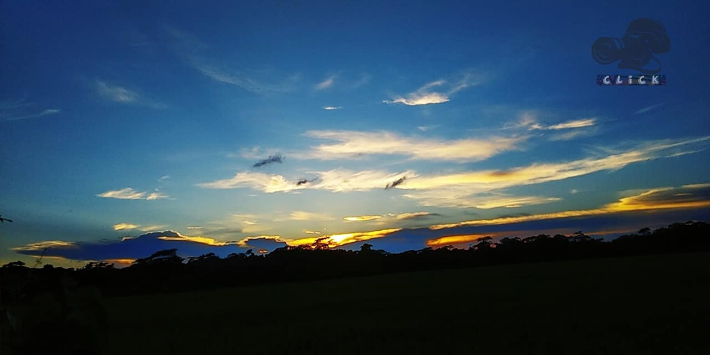
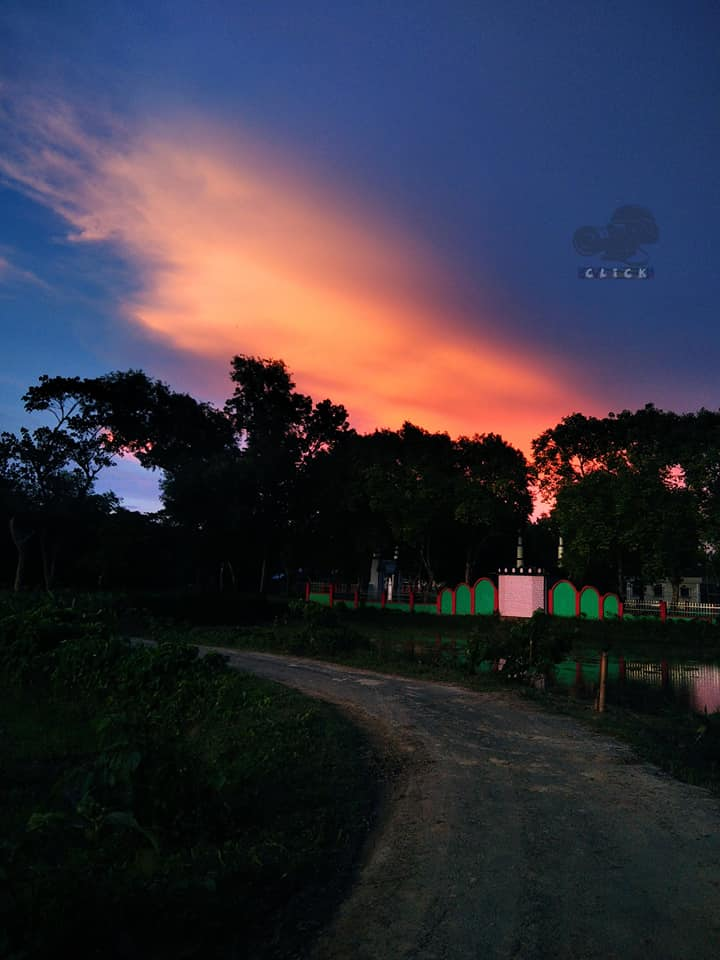
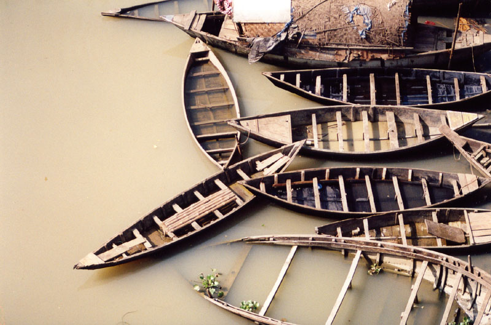

💚;
Bangladesh,is a South Asian country whose official name is People's Republic of Bangladesh. It is the world's ninth most populous country, with almost 163 million people living in an area of 148,560 square kilometres (57,360 square miles), making it one of the most densely populated countries on the planet.
 Bangladesh is surrounded by India on the west, north, and east, Myanmar on the southeast, and the Bay of Bengal on the south. The Siliguri Corridor divides it from Nepal and Bhutan, while the Indian state of Sikkim separates it from China. Dhaka, Bangladesh's capital and largest city, is the country's economic, political, and cultural centre. Chittagon is Bangladesh's busiest seaport.
Bangladesh is the largest and easternmost country in the Bengal region. The Vanga Kingdom, one of the namesakes of the Bengal area, was a great maritime force, according to the ancient Indian scriptures Rmyana and Mahbhrata. The area was home to several principalities during the ancient and classical periods of the Indian subcontinent, including the Pundra, Gangaridai, Gauda, Samatata, and Harikela.Under the reign of Ashoka, it was also a Mauryan province. The principalities were famous for their international trade, links with the Roman world, the export of exquisite muslin and silk to the Middle East, and the dissemination of philosophy and art to Southeast Asia. The final pre-Islamic Bengali intermediate kingdoms were the Gupta Empire, Pala Empire, Chandra dynasty, and Sena dynasty.
Bangladesh's official language is Bengali (also known as Bangla). Bengali is one of the Indo-European language family's easternmost branches. It was formed during the 10th and 13th century in South Asia as one of the Eastern Indo-Aryan languages. The Bengali script is used to write Bengali.The national song of bangladesh is:

আমার সোনার বাংলা
আমি তোমায় ভালবাসি
আমার সোনার বাংলা
আমি তোমায় ভালবাসি
চিরদিন তোমার আকাশ
চিরদিন তোমার আকাশ
তোমার বাতাস আমার প্রাণে
ও মা, আমার প্রাণে বাজায় বাঁশি
সোনার বাংলা
আমি তোমায় ভালবাসি
Dhaka, Bangladesh's capital and largest city, is governed by two city corporations, which share control of the city's northern and southern areas. In Bangladesh, there are 506 urban centres, with 43 of them having a population of more than 100,000 people. Largest cities or towns in Bangladesh:
Inadequate electricity supply is a major roadblock to Bangladesh's economic progress. Poor governance, corruption, and weak public institutions, according to the World Bank, are also key issues. Bangladesh received a BB- long-term credit rating from Standard & Poor's in April 2010, which was lower than India's but higher than Pakistan's and Sri Lanka's.
| Year | Share |
|---|---|
| 1980 | 0.31% |
| 1990 | 0.33% |
| 2000 | 0.36% |
| 2010 | 0.34% |
| 2019 | 0.58% |
developed by© Fahamida Islam